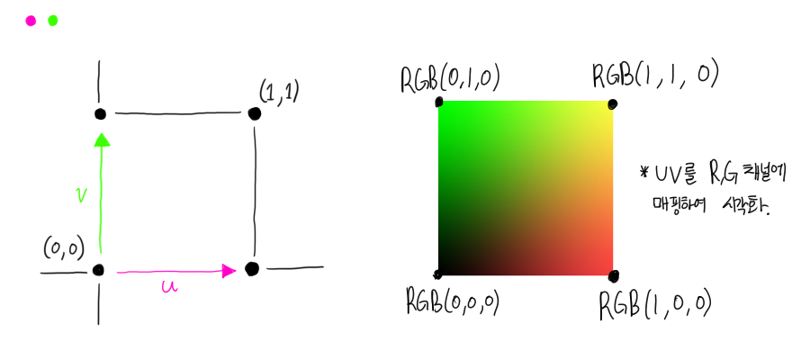
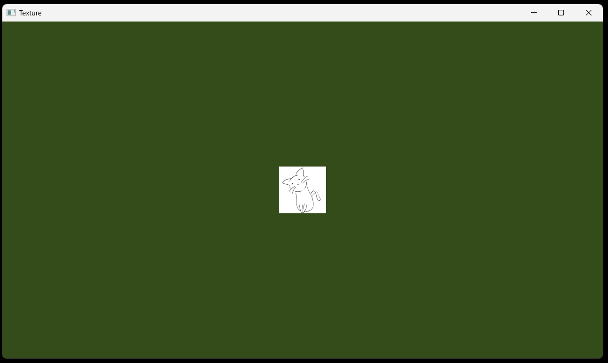

05. 텍스쳐의 사용
목차
- 텍스쳐 자원 (Texture 2D, Array, Texture Buffer)
- stb 라이브러리
- 텍스쳐의 구조 (InternalFormat, PixelFormat, DataType, Wrapping, Filter, Mipmap 계산과 textureLod)
- 텍스쳐 클래스 구현
- 텍스쳐 출력하기 (UV 좌표계)
텍스쳐 자원
이제 텍스쳐를 알아봅시다.
텍스쳐란, OpenGL에서 제공하는 자원들 중 하나로써
일련의 N차원 데이터를 저장해서, 이를
- 특정 필터를 걸어 샘플링하거나
- Mipmap을 만드는
등의 기능을 제공합니다.
여기서 '샘플링' 이란, 정수형의 크기를 가지는 N차원 이미지를
0.0 ~ 1.0 범위의 실수 N개를 사용해 해당 좌표에 맞는 색을 얻는 것을 뜻합니다.
여기서 샘플링이라는 작업에 주는 [0, 1] 범위 내의 실수를 'UV' 라고 합니다.
UV 값을 텍스쳐에 적용하는 좌표계는 API마다 다른데 -
아래 그림과 같이, OpenGL에서는 왼쪽 하단을 (0, 0) 으로 잡고
우측 상단이 (1, 1)이 되는 UV 좌표계를 가지고 있습니다.

stb 라이브러리
stb는 여러 복잡한 작업들을 단일 헤더로 할 수 있게 하는
퍼블릭 도메인 라이브러리입니다.
OGG Vorbis 디코더, TTF 파서, 페를린 노이즈 생성기 등 매우 유용한 헤더들이 들어있죠.
그중에서 stb_image라는 이미지 디코딩 라이브러리는
기존에 사용되던 lodepng 나 FreeImage 같은 번거로운 링킹과 라이선스 문제(GPLv2) 투성이인
이미지 디코딩 라이브러리를 완전히 대체했습니다.
stb_image 는 기본적으로 다음과 같은 포맷을 지원합니다.
- JPG (JPEG)
- PNG
- TGA
- BMP
- PSD
- HDR
- PIC
- PNM
- GIF1
싱글 헤더이기 때문에, 그냥 stb_image.h 파일 하나를 다운받고
'1개의 소스 파일'에 #define STB_IMAGE_IMPLEMENTATION 을 정의해주시면 됩니다.
사용 방법은 다음과 같습니다.
int width, height, channel;
auto* data = stbi_load("C:/Test.png", &width, &height, &channel, 0);
// data 사용...
stbi_image_free(data);
위에서 width, height에는 각각 이미지의 너비, 높이가 들어가며,
channel에는 채널의 개수가 들어갑니다.
예를 들어 channel이 3이라면 RGB 형식, 즉 불투명도 정보가 없는 것이며,
channel이 4면 불투명도가 포함된 RGBA 형식인 것입니다.
JPG 포맷이면 대개 3 채널값을 가집니다.
PNG 포맷이면 알파값이 있을 수도 있고 없을 수도 있기에 3일지 4일지 모릅니다.
정확한 채널 수는 윈도우 기준 이미지 파일 우클릭 - 속성 - 자세히 를 통해 쉽게 알 수 있습니다.
(24비트면 채널 3개, 32비트면 채널 4개입니다)
텍스쳐의 구조
만든 텍스쳐 자원에 이미지 데이터를 업로드하기 위해서는,
어떤 형식의 텍스쳐로써 사용할 건지 꼭 명시해줘야 합니다.
텍스쳐 필터
아까 언급했던 '샘플링' 얘기를 더 해봅시다.
예를 들어, 100x100 크기의 2차원 이미지가 있다고 해보죠.
0% 부분의 픽셀과, 100% 부분의 픽셀은
각각 0번째, (N - 1) 번째 픽셀을 가져오면 되겠네요. $$ P_0 = Arr[0], P_{100} = Arr[99] $$ 그런데 저는 50%, 즉 텍스쳐의 (0.5, 0.5) 라는 좌표의 픽셀 색을 얻고 싶습니다.
그러면 텍스쳐의 몇 번째 X, Y 부분의 픽셀을 가져오면 될까요? $$ (100 - 1) * 0.5 = 49.5 $$ 이런, (49.5, 49.5) 좌표, 즉 인덱스가 49.5인 픽셀은 어떻게 구하죠?
이때 필터의 개념이 등장합니다.
만약 필터가 최근접(=Nearest) 필터였다면,
49.5라는 값과 가장 가까운 (50, 50) 좌표의 픽셀을 사용합니다.
또 필터가 선형(=Linear) 필터였다면,
(49.5, 49.5)를 기준으로
(49, 49), (50, 49), (49, 50), (50, 50) 이렇게 4개를 가지고 평균을 냅니다.
OpenGL에서는,
- Min Filter
- Mag Filter
이렇게 2개의 필터를 지정할 수 있습니다.
Min Filter의 경우, 텍스쳐가 화면 내에서 원본 크기보다 줄어들 때의 필터입니다.
이런 축소되는 상황에서 사용되는 필터는 4가지가 있습니다.
- GL_NEAREST
- GL_LINEAR
- GL_NEAREST_MIPMAP_NEAREST (Trilinear, Mipmap 또한 보간)
- GL_LINEAR_MIPMAP_LINEAR (Trilinear, Mipmap 또한 보간)
Note
뒤에 2개는 Mipmap과 LoD 개념에서,
LoD가 정수가 아닌 경우, 무슨 Mipmap을 사용하여 어떻게 보간할 것인지를 결정하는 겁니다.
Mipmap과 LoD 개념은 뒤에 설명합니다.
나머지 Mag(nify) Filter는 반대로 텍스쳐가 화면 내에서 커질 때의 필터입니다.
확대의 경우 2개의 필터를 사용 가능합니다.
- GL_NEAREST
- GL_LINEAR
최근접 필터를 쓴 경우 픽셀 사이의 경계가 확실해져서
픽셀 아트를 렌더링할 때 좋습니다.
선형 필터를 쓴 경우, 픽셀 사이에 블러가 적용되어
고화질 사진을 화면에 찌그러짐 없이 렌더링하기 좋습니다.
텍스쳐 래핑
이런 생각도 해볼 수 있습니다.
0.0 ~ 1.0 범위가 아닌, 음수나 1보다 큰 값을
UV에 적용하면, 무슨 픽셀을 가져와야 할까요?
이를 설정하는 것을 래핑이라고 합니다.
OpenGL에서는 다음과 같은 래핑이 존재합니다.
0보다 작거나, 1보다 큰 값으로 샘플링할 때:
- GL_REPEAT : 해당 이미지를 계속 반복
- GL_CLAMP_TO_EDGE : 모서리 픽셀 값 사용
- GL_CLAMP_TO_BORDER : 지정된 Border의 색 사용
- GL_MIRRORED_REPEAT : 반복시키되 반전시키면서
GL_CLAMP_TO_BORDER 를 사용할 경우,
glTextureParameter 함수에 GL_TEXTURE_BORDER_COLOR 를 지정해서 보더의 색을 설정할 수 있습니다.
또한 OpenGL에서는 세 축에 대한 래핑을 적용할 수 있습니다.
- GL_TEXTURE_WRAP_S
- GL_TEXTURE_WRAP_T
- GL_TEXTURE_WRAP_R
2D 텍스쳐에서는 U, V축에 대해 각각 WRAP_S, WRAP_T 를 사용하며
3D 텍스쳐에는 추가된 한 축에 대해서 WRAP_R 또한 사용합니다.
텍스쳐 포맷
샘플링에 관한 설정이 있었다면,
텍스쳐 데이터 자체의 포맷도 지정해야 하겠죠?
OpenGL 텍스쳐에 꼭 지정해야 하는 포맷은 3개입니다.
- Internal Format
- Pixel Format
- Pixel Data Type
Internal Format은 텍스쳐가 GPU 내에 어떤 형태로 저장되는지를 가르킵니다.
예를 들어, GL_RGB8의 경우, '한 픽셀 당 24(8 * 3)비트를 사용하며,
나열된 정보의 순서는 Red - Green - Blue 이다.' 라는 뜻을 지닙니다.
Pixel Format은 저희가 CPU 측에서 로딩한 데이터의 형태를 가르킵니다.
GL_RGB의 경우 데이터가 R - G - B 순으로 저장되어 있음을 뜻합니다.
Pixel Data Type은 저희가 로딩한 데이터의 타입을 가르킵니다.
만약 텍스쳐를 unsigned char 형으로 저장하고 있다면
이를 GL_UNSIGNED_BYTE 로 지정해야 합니다.
가능한 포맷들과 그 조합을 쉽게 알 수 있습니다.
밉맵
GL에는 밉맵(Mipmap)이란 기능도 존재합니다.
밉맵이란, 텍스쳐가 업로드 된 직후에
텍스쳐의 크기를 계속 반으로 줄여 가면서
미리 그 텍스쳐의 '미니 버전' 들을 만들어 저장해 두고,
스크린 상의 크기에 따라 특정한 버전의 미니 버전,
즉 밉맵 텍스쳐를 원본 대신 사용할 수 있게 하는 기술입니다.
재밌는 건, OpenGL 함수 하나만 불러 주면 GL측에서 밉맵을 만들어 준다는 점입니다.
또한, 밉맵의 개수는 텍스쳐의 크기에 따라 자동으로 결정되며,
밉맵의 최대 개수를 결정하는 수식은 다음과 같습니다.
(아래 건 3차원 이미지용입니다)
(모든 텍스쳐는 밉맵을 만들지 않더라도 '0번째 기본 밉맵'에 해당하는 밉맵 1개는 무조건 가집니다.) $$ Mips = 1 + round(floor(log2(max(Width, Height)))) $$ $$ Mips = 1 + round(floor(log2(max(Width, Height, Depth)))) $$
Note
사용자 측에서는 프래그먼트 셰이더 내에서
texture() 대신 textureLod() 를 사용하여
미리 만들어진 밉맵을 포함해 샘플링을 할 수 있습니다.
예를 들면 texture(Texture, UV, 2.0) 같이 LoD 인자에 2.0이라는 실수를 주면 강제로 레벨 2 밉맵을 샘플링하게 되는 겁니다.
(texture() 사용법은 밑을 참고하세요)
텍스쳐 클래스 구현
우선 여러 OpenGL 포맷들에 대해 열거형을 정의해줍시다.
직접 써보는 의미가 크지 않으니 그냥 복사하시는 걸 추천드립니다.
(열거형 중에 몇 개 빠져있는 게 있을 수 있지만, 흔히 사용되는 건 다 있습니다)
// 래핑 타입
enum class WrappingType : GLenum {
ClampToEdge = GL_CLAMP_TO_EDGE,
ClampToBorder = GL_CLAMP_TO_BORDER,
Repeat = GL_REPEAT,
MirroredRepeat = GL_MIRRORED_REPEAT
};
// 필터링 타입
enum class FilterType : GLenum {
Nearest = GL_NEAREST,
Linear = GL_LINEAR,
NearestMipmapNearest = GL_NEAREST_MIPMAP_NEAREST,
LinearMipmapNearest = GL_LINEAR_MIPMAP_NEAREST,
NearestMipmapLinear = GL_NEAREST_MIPMAP_LINEAR,
LinearMipmapLinear = GL_LINEAR_MIPMAP_LINEAR
};
// 내부 포맷
enum class InternalFormat : GLenum {
CompressedRed = GL_COMPRESSED_RED,
CompressedRedRGTC1 = GL_COMPRESSED_RED_RGTC1,
CompressedRG = GL_COMPRESSED_RG,
CompressedRGB = GL_COMPRESSED_RGB,
CompressedRGBA = GL_COMPRESSED_RGBA,
CompressedRGRGTC2 = GL_COMPRESSED_RG_RGTC2,
CompressedSignedRedRGTC1 = GL_COMPRESSED_SIGNED_RED_RGTC1,
CompressedSignedRGRGTC2 = GL_COMPRESSED_SIGNED_RG_RGTC2,
CompressedSRGB = GL_COMPRESSED_SRGB,
DepthStencil = GL_DEPTH_STENCIL,
Depth24Stencil8 = GL_DEPTH24_STENCIL8,
Depth32FStencil8 = GL_DEPTH32F_STENCIL8,
DepthComponent = GL_DEPTH_COMPONENT,
DepthComponent16 = GL_DEPTH_COMPONENT16,
DepthComponent24 = GL_DEPTH_COMPONENT24,
DepthComponent32F = GL_DEPTH_COMPONENT32F,
R16F = GL_R16F,
R16I = GL_R16I,
R16SNorm = GL_R16_SNORM,
R16UI = GL_R16UI,
R32F = GL_R32F,
R32I = GL_R32I,
R32UI = GL_R32UI,
R3G3B2 = GL_R3_G3_B2,
R8 = GL_R8,
R8I = GL_R8I,
R8SNorm = GL_R8_SNORM,
R8UI = GL_R8UI,
Red = GL_RED,
RG = GL_RG,
RG16 = GL_RG16,
RG16F = GL_RG16F,
RG16SNorm = GL_RG16_SNORM,
RG32F = GL_RG32F,
RG32I = GL_RG32I,
RG32UI = GL_RG32UI,
RG8 = GL_RG8,
RG8I = GL_RG8I,
RG8SNorm = GL_RG8_SNORM,
RG8UI = GL_RG8UI,
RGB = GL_RGB,
RGB10 = GL_RGB10,
RGB10A2 = GL_RGB10_A2,
RGB12 = GL_RGB12,
RGB16 = GL_RGB16,
RGB16F = GL_RGB16F,
RGB16I = GL_RGB16I,
RGB16UI = GL_RGB16UI,
RGB32F = GL_RGB32F,
RGB32I = GL_RGB32I,
RGB32UI = GL_RGB32UI,
RGB4 = GL_RGB4,
RGB5 = GL_RGB5,
RGB5A1 = GL_RGB5_A1,
RGB8 = GL_RGB8,
RGB8I = GL_RGB8I,
RGB8UI = GL_RGB8UI,
RGB9E5 = GL_RGB9_E5,
RGBA = GL_RGBA,
RGBA12 = GL_RGBA12,
RGBA16 = GL_RGBA16,
RGBA16F = GL_RGBA16F,
RGBA16I = GL_RGBA16I,
RGBA16UI = GL_RGBA16UI,
RGBA2 = GL_RGBA2,
RGBA32F = GL_RGBA32F,
RGBA32I = GL_RGBA32I,
RGBA32UI = GL_RGBA32UI,
RGBA4 = GL_RGBA4,
RGBA8 = GL_RGBA8,
RGBA8UI = GL_RGBA8UI,
SRGB8 = GL_SRGB8,
SRGB8A8 = GL_SRGB8_ALPHA8,
SRGBA = GL_SRGB_ALPHA,
R11FG11FB10F = GL_R11F_G11F_B10F,
};
// 픽셀 포맷
enum class PixelFormat : GLenum {
Red = GL_RED,
Green = GL_GREEN,
Blue = GL_BLUE,
Alpha = GL_ALPHA,
RGB = GL_RGB,
RGBA = GL_RGBA,
BGR = GL_BGR,
BGRA = GL_BGRA,
RG = GL_RG,
RedInteger = GL_RED_INTEGER,
RGInteger = GL_RG_INTEGER,
RGBInteger = GL_RGB_INTEGER,
BGRInteger = GL_BGR_INTEGER,
RGBAInteger = GL_RGBA_INTEGER,
BGRAInteger = GL_BGRA_INTEGER,
StencilIndex = GL_STENCIL_INDEX,
DepthComponent = GL_DEPTH_COMPONENT,
DepthStencil = GL_DEPTH_STENCIL
};
// 데이터 형태
enum class DataType : GLenum {
Byte = GL_BYTE,
UnsignedByte = GL_UNSIGNED_BYTE,
Short = GL_SHORT,
UnsignedShort = GL_UNSIGNED_SHORT,
Int = GL_INT,
UnsignedInt = GL_UNSIGNED_INT,
Float = GL_FLOAT,
Double = GL_DOUBLE,
UnsignedByte332 = GL_UNSIGNED_BYTE_3_3_2,
UnsignedByte233Rev = GL_UNSIGNED_BYTE_2_3_3_REV,
UnsignedShort565 = GL_UNSIGNED_SHORT_5_6_5,
UnsignedShort565Rev = GL_UNSIGNED_SHORT_5_6_5_REV,
UnsignedShort4444 = GL_UNSIGNED_SHORT_4_4_4_4,
UnsignedShort4444Rev = GL_UNSIGNED_SHORT_4_4_4_4_REV,
UnsignedShort5551 = GL_UNSIGNED_SHORT_5_5_5_1,
UnsignedShort1555Rev = GL_UNSIGNED_SHORT_1_5_5_5_REV,
UnsignedInt8888 = GL_UNSIGNED_INT_8_8_8_8,
UnsignedInt8888Rev = GL_UNSIGNED_INT_8_8_8_8_REV,
UnsignedInt101010102 = GL_UNSIGNED_INT_10_10_10_2
};
이제 위에서 정의한 열거형을 모두 담을 수 있는 구조체를 하나 만듭시다.
struct TextureDesc {
FilterType MagFilter = FilterType::Linear;
FilterType MinFilter = FilterType::Linear;
WrappingType WrappingS = WrappingType::Repeat;
WrappingType WrappingT = WrappingType::Repeat;
WrappingType WrappingR = WrappingType::Repeat;
InternalFormat FormatInternal = InternalFormat::RGBA8;
PixelFormat FormatPixel = PixelFormat::RGBA;
DataType FormatData = DataType::UnsignedByte;
bool MipmapGeneration = false;
// 해당 텍스쳐의 밉맵을 몇 개나 생성할 건지.
std::optional<int> MipmapLevel = std::nullopt;
};
만약 MipmapGeneration이 true이고 MipMapLevel 이 nullopt 였다면
위의 수식을 통해서 밉맵 개수를 자동으로 계산할 겁니다.
이제 2차원 텍스쳐 클래스를 구현해봅시다.
glCreateTextures 와 glDeleteTextures 를 사용하여 OpenGL 텍스쳐를 생성할 수 있습니다.
class Texture2D final {
private:
mutable glm::uvec2 m_size{};
private:
mutable TextureDesc m_desc{};
private:
GLuint m_ID = 0;
public:
Texture2D() {
glCreateTextures(GL_TEXTURE_2D, 1, &m_ID);
}
~Texture2D() {
glDeleteTextures(1, &m_ID);
}
...
텍스쳐를 생성했다면, 텍스쳐 안의 내용물을 초기화할 수 있어야겠죠.
우선 빈 값으로 초기화하는 메서드입니다.
밉맵 개수를 계산하고,
glTextureStorage2D 를 통해 텍스쳐의 저장 공간을 할당합니다.
해당 함수의 2번째 인자에는 밉맵 개수를 넣고, 3번째, 4, 5번째에 각각
내부 포맷과 텍스쳐 크기를 전달합니다.
필터와 래핑 설정은 glTextureParameteri 를 통해 지정할 수 있습니다.
2번째 인자를 바꿔 가면서 값을 넣는 것에 주의하세요.
glClearTexImage 는 마지막 인자 값으로 해당 텍스쳐를 초기화합니다.
nullptr를 전달하면 0으로 초기화합니다.
밉맵은 glGenerateTextureMipmap 를 통해서 OpenGL에게 생성을 요청하면 됩니다.
(주의할 것은 밉맵을 요청하기 전에 glTextureStorage2D 같은 함수로
0번째 기본 밉맵을 생성한 상태여야 합니다.)
...
void initialize_empty(const glm::uvec2& size, const TextureDesc& desc) const {
m_size = size;
m_desc = desc;
// 밉맵 최대 레벨이 1이면 밉맵X, 기본 1개만 사용
int mip_level_count = 1;
if (desc.MipmapGeneration == true) {
if (desc.MipmapLevel.has_value()) {
mip_level_count = desc.MipmapLevel.value();
}
else {
mip_level_count = 1 + static_cast<int>(std::floor(std::log2(std::max(size.x, size.y))));
}
}
glTextureStorage2D(m_ID, mip_level_count,
(GLenum)desc.FormatInternal,
static_cast<int>(size.x), static_cast<int>(size.y)
);
glTextureParameteri(this->m_ID, GL_TEXTURE_MIN_FILTER, (GLenum)desc.MinFilter);
glTextureParameteri(this->m_ID, GL_TEXTURE_MAG_FILTER, (GLenum)desc.MagFilter);
glTextureParameteri(this->m_ID, GL_TEXTURE_WRAP_S, (GLenum)desc.WrappingS);
glTextureParameteri(this->m_ID, GL_TEXTURE_WRAP_T, (GLenum)desc.WrappingT);
glClearTexImage(m_ID, 0,
(GLenum)desc.FormatPixel,
(GLenum)desc.FormatData,
nullptr
);
// 앞에서 0으로 mipmap레벨 0을 초기화했으므로
// 이 명령은 유효하다
if (desc.MipmapGeneration == true) {
glGenerateTextureMipmap(m_ID);
}
}
...
빈 값이 아닌 저희가 로딩한 이미지 데이터로 초기화하려면, 다음과 같은 메서드를 추가해야 합니다.
다른 부분은 모두 똑같지만, glTextureSubImage2D 를 통해서
커스텀 데이터를 업로드하는 부분에 집중하세요.
이때, const void*로 넘기는 데이터는
TextureDesc 에 지정한 포맷과 맞게 하는 게 정말 중요합니다.
- PixelFormat에 지정한 픽셀 형태이고
- DataFormat에 지정한 타입과 일치
해야합니다.
또한 2차원 텍스쳐의 크기가 100 x 100 이라면,
데이터의 전체 바이트 크기가 sizeof(DataFormat) * PixelLen * 100 * 100 이어야 하겠죠?
(PixelLen 은 PixelFormat이 RGBA이면 4, RGB면 3인 겁니다.)
void initialize_by_bytes(const glm::uvec2& size, const void* data, const TextureDesc& desc) const {
m_size = size;
m_desc = desc;
// 밉맵 최대 레벨이 1이면 밉맵X, 기본 1개만 사용
int mip_level_count = 1;
if (desc.MipmapGeneration == true) {
if (desc.MipmapLevel.has_value()) {
mip_level_count = desc.MipmapLevel.value();
}
else {
mip_level_count = 1 + static_cast<int>(std::floor(std::log2(std::max(size.x, size.y))));
}
}
glTextureStorage2D(m_ID, mip_level_count,
(GLenum)desc.FormatInternal,
static_cast<int>(size.x), static_cast<int>(size.y)
);
glTextureParameteri(m_ID, GL_TEXTURE_MIN_FILTER, (GLenum)desc.MinFilter);
glTextureParameteri(m_ID, GL_TEXTURE_MAG_FILTER, (GLenum)desc.MagFilter);
glTextureParameteri(m_ID, GL_TEXTURE_WRAP_S, (GLenum)desc.WrappingS);
glTextureParameteri(m_ID, GL_TEXTURE_WRAP_T, (GLenum)desc.WrappingT);
// 그냥 여기서 레벨 0만 초기화하고,
// glGenerateTextureMipmap() 불러주면 자동으로 채워짐.
glTextureSubImage2D(
m_ID,
0, // 레벨 0만 초기화
0, 0, // 오프셋
static_cast<int>(size.x),
static_cast<int>(size.y),
(GLenum)desc.FormatPixel,
(GLenum)desc.FormatData,
data
);
if (desc.MipmapGeneration == true) {
glGenerateTextureMipmap(m_ID);
}
}
바로 전에 사용한 함수에 Sub 라는 단어가 들어가는 이유는,
N번째 밉맵을 타겟으로 하여, 그 밉맵에 데이터를 업로드하기 때문입니다.
(위에서는 0으로 고정이죠.)
이에 맞춘 메서드도 만들어 줘야 합니다.
이 메서드에 전달하는 size는 '해당 밉맵의 크기' 라는 것에 주의하세요.
또 위 메서드에서 저장해둔 m_desc 를 사용하기 때문에
initialize_* 메서드 이후에 호출해야 하는 것도 주의하세요.
public:
void upload_sub_image(const glm::ivec2& offset, const glm::uvec2& mipmap_size, const int& mip_lvl, const void* ptr) const {
// 이미 init이 되어 있다고 가정
// -> texStorage 이미 끝남....
glTextureSubImage2D(
m_ID,
mip_lvl, // 타겟팅하는 밉맵 레벨
offset.x, offset.y, // 오프셋
static_cast<int>(mipmap_size.x), // 해당 밉맵 크기
static_cast<int>(mipmap_size.y), // 해당 밉맵 크기
(GLenum)m_desc.FormatPixel,
(GLenum)m_desc.FormatData,
ptr
);
}
이렇게 만들어진 텍스쳐를 셰이더 내에서 접근하려면,
VAO 때와 같이 바인딩을 해야 합니다.
glBindTextureUnit 함수를 통해서
해당 텍스쳐를 N번째 슬롯에 바인딩할 수 있습니다.
그리고 셰이더에는 이 텍스쳐가 '몇 번째 슬롯' 에 있는지만 전달하면 됩니다.
public:
void bind_unit(const uint32_t& slot) const {
glBindTextureUnit(slot, m_ID);
}
public:
const GLuint& get_opengl_id() const { return m_ID; }
};
텍스쳐 출력하기
단색 도형이 아닌 텍스쳐를 출력하기 위해서는,
전에 만들었던 정점 데이터에 정보를 추가해야 합니다.
맨 위의 그림을 보시면, OpenGL에서는 텍스쳐의 영역을 지정하기 위해서
좌측 하단을 (0, 0) 으로 하는 [0, 1] 범위의 UV 좌표계를 사용합니다.
따라서, 저희가 그리는 사각형의 각 정점이, 무슨 UV 좌표값을 갖는지를
추가적으로 알려줘야 하겠죠.
정점 데이터를 다음과 같이 수정합시다.
// 정점 데이터를 준비합니다.
std::vector<float> vertices_data = {
-0.5f, 0.5f, // 첫 번째 정점 (사각형의 topleft)
0.0f, 1.0f, // 첫 번째 정점의 UV좌표.
0.5f, 0.5f, // 두 번째 정점 (사각형의 topright)
1.0f, 1.0f, // 두 번째 정점의 UV좌표.
0.5f, -0.5f, // 세 번째 정점 (사각형의 bottomright)
1.0f, 0.0f, // 세 번째 정점의 UV좌표.
-0.5f, -0.5f, // 네 번째 정점 (사각형의 bottomleft)
0.0f, 0.0f, // 네 번째 정점의 UV좌표.
};
이로써 저희는 2개의 float형으로 '정점의 위치'를,
또 2개의 float형으로 '정점의 UV 좌표값'을 표현하는
'float형 4개로 이루어진 정점'을 4개 준비한 것입니다.
정점의 형태가 바뀌었으니, VAO 속성 연결 부분도 수정합시다.
// 정점 배열에 정점 버퍼와 인덱스 버퍼를 연결
// VB를 0번 바인딩에
glVertexArrayVertexBuffer(VA, 0, VB, 0, sizeof(float) * 4); // 정점은 float형 4개로 이뤄집니다
glVertexArrayElementBuffer(VA, EB);
// 정점 배열의 0번째 속성을 활성화
// -> 0번째 속성은 2차원 벡터로, 위치 정보를 나타냅니다.
glEnableVertexArrayAttrib(VA, 0);
// 정점 배열의 0번째 속성을 0번 바인딩에 연결
glVertexArrayAttribBinding(VA, 0, 0);
// 정점 배열의 0번째 속성에 형태 명시
glVertexArrayAttribFormat(VA, 0, 2, GL_FLOAT, GL_FALSE, 0);
// 정점 배열의 1번째 속성을 활성화
// -> 1번째 속성은 2차원 벡터로, UV 정보를 나타냅니다.
glEnableVertexArrayAttrib(VA, 1);
// 정점 배열의 1번째 속성을 0번 바인딩에 연결
glVertexArrayAttribBinding(VA, 1, 0);
// 정점 배열의 1번째 속성에 형태 명시
glVertexArrayAttribFormat(VA, 1, 2, GL_FLOAT, GL_FALSE, sizeof(float) * 2); // 마지막 인자는 이전 정보의 크기의 합
정점의 크기를 sizeof(float) * 2 대신 sizeof(float) * 4 로 지정합니다.
또한 속성을 하나 더 추가할 때
glVertexArrayAttribFormat 에서
인덱스 1번째 속성이 Float형 2개로 이루어짐을 명시하고,
'이전 속성의 크기의 합' 을 넣어줘야 합니다.
이때는 이전의 유일한 '인덱스 0번째 속성 크기', 즉 sizeof(float) * 2를 넣으면 됩니다.
이젠 2차원 텍스쳐 클래스를 실제로 써봅시다.
stb_image 라이브러리로 이미지 데이터를 로딩하고,
Texture2D::initialize_by_bytes 메서드로 그 데이터를 업로드하는 겁니다.
stbi_load 를 호출하여 특정 경로의 이미지 정보를 읽어 옵니다.
- 이미지 너비
- 이미지 높이
- 이미지 채널 수 (보통 3 또는 4)
- 이미지 데이터
이렇게 4개의 정보를 얻을 수 있습니다.
(만약 이미지가 존재하지 않았다면, nullptr이 반환됩니다)
Note
예제를 실행할 때, 채널이 4개인 PNG 이미지를 준비하시고
그 경로를 "image.png" 대신 써 주세요.
혹시 맨 위의 UV 좌표계를 기억하시나요?
stb_image에는 stbi_set_flip_vertically_on_load 함수를 통해서
이미지의 Y축을 반전시켜 로딩할 수 있습니다.
뜬금없이 이런 기능을 쓰는 이유는,
OpenGL의 UV 좌표계는 Y축이 위를 향하지만
대부분의 이미지 포맷은 Y축이 아래를 향하기 때문입니다.
Texture2D tex{};
{
TextureDesc desc{ };
int w{}, h{}, c{};
stbi_set_flip_vertically_on_load(true);
auto* data = stbi_load("image.png", &w, &h, &c, 0);
assert(data != nullptr && c == 4);
tex.initialize_by_bytes({ w, h }, data, desc);
stbi_image_free(data);
}
이미지 크기와 데이터를 가지고 initialize_by_bytes 를 호출해준 후
stbi_image_free 를 통해 할당한 데이터를 해제하는 것을 잊지 마세요.
대망의 셰이더 부분입니다.
가장 먼저, 정점 셰이더를 수정합시다.
아까 정점 데이터에 UV 정보를 추가했었죠?
저희는 그것에 맞추어 정점셰이더에도 추가해야 합니다.
location = 1 로 지정해 vec2 aTexCoord 속성을 추가해 주세요.
// 모든 GLSL 코드는 #version [버전] [core(선택)] 이라는 전처리기로 시작합니다.
#version 460 core
// 아까 만들었던 정점 데이터가 하나하나씩 여기로 들어옵니다.
// 2차원 정점으로 만들었으니 vec2로 받아야 합니다.
layout (location = 0) in vec2 aPos;
layout (location = 1) in vec2 aTexCoord;
정점 셰이더에서는 (클립 공간의) 최종 정점 위치를,
프래그먼트 셰이더에서는 픽셀의 색상을 결정한다는 게 기억나시나요?
아직 감은 잘 오지 않으실 겁니다.
저희가 단색 도형을 출력할 때에는 vec4 FragColor 를 출력으로써,
무조건 빨간색(vec4(1, 1, 1, 1)) 을 전달했습니다.
그러나, 이제는
'해당 픽셀이, 텍스쳐의 어느 부분에 해당하는가'
를 알 수 있어야 합니다.
따라서, 저희는 정점 셰이더의 UV 정보를
프래그먼트 셰이더로 전달할 것입니다.
프래그먼트 셰이더에서 출력을 지정하기 위해 out 키워드를 썼었죠?
정점 셰이더에서도, 이후 일어나는 셰이더 스테이지들에게 '출력' 하는 기능이 있습니다.
다음과 같이 out vec2 TexCoord 라는 정점 셰이더의 출력을 정의하고,
저희 정점의 UV 정보를 프래그먼트 셰이더에 전달해주면 됩니다.
...
layout (location = 0) out vec2 TexCoord;
void main() {
vec2 pos = (aPos * uSize);
gl_Position = uProj * uView * uWorld * vec4(pos, 0, 1);
TexCoord = aTexCoord;
}
Warning
저희는 분명 정점 데이터에 (0, 0) 이나 (1, 0) 같은,
'모서리 끝부분 값' 만 주었습니다.
생각해보니까, UV값이 그렇게 끝부분만 전달된다면,
말 그대로 (1, 1) 같은 텍스쳐의 끄트머리만 출력되는 것 아닐까요?
이는 렌더링 파이프라인을 이해할 때 많이 헷갈리는 부분입니다.
OpenGL은 사용자가 작성한 정점 셰이더에서
클립 공간의 정점 위치들을 받습니다.
그 후에, 그 점들을 인덱스 데이터를 참조해, 지정된 형태로 '연결' 합니다.
연결하면 뭐가 생기는가, 바로 '기하적 정보' 입니다.
예를 들면 '점 A, B, C가 이루는 삼각형' 같은 것이죠.
그러나 그런 기하 정보만으로는 '화면에 직접적으로 그리지' 못 합니다.
따라서 해당 정보를 '화면의 픽셀들의 집합' 으로 표현하는 과정이
'레스터라이제이션' 인 것입니다.
그 과정에서 OpenGL은 정점과 정점 사이를
무게중심 좌표계를 기준으로 보간하게 되는데,
이때 (0, 0) 과 (1, 1) 사이의 (0.5, 0.5) 와 같은
값이 자연스레 생기는 것입니다.
한 줄로 요약하자면,
프래그먼트 셰이더는 픽셀 1개당 1번 호출되며,
GL은 정점 1개 당 1번 호출되는 정점 셰이더의 출력을 '자동으로 보간'함.
사실 밑의 링크의 개념들은 상용 그래픽스 API를 사용한다면
몰라도 개발이 가능하지만,
사실상 (소프트웨어) 렌더링 기술의 기초 중의 기초.
즉 매우 중요한 내용 중 하나입니다.
꼭 CPU 렌더링을 구현하지 않아도, 알아두시면 정말 좋습니다.
면접 볼 때도 잘 나오는 부분일 겁니다.
레스터라이제이션 위키피디아
스캔라인 알고리즘 위키피디아
무게중심 좌표계 위키피디아
원근보정해서 보간하기 위키피디아
그래픽스 파이프라인 위키피디아
정점 셰이더에 맞춰서, 해당 출력을
프래그먼트 셰이더에서 다음과 같이 받아와야 합니다.
in vec2 TexCoord로, 아까와 동일한 이름의 출력 정보를 in 으로 받아줍니다.
layout (location = 0) in vec2 TexCoord;
또한, 저희가 생성했던 텍스쳐를 GPU에서 사용하기 위해
sampler2D라는 타입의 유니폼을 정의해 줘야 합니다.
다음과 같은 줄을 추가해주세요.
layout (location = 4) uniform sampler2D uTexture;
여기서 sampler2D 라는 타입은, '샘플링이 가능한 2차원 데이터' 라는 뜻입니다.
마지막으로 main함수 안에서는,
'텍스쳐를 정점 셰이더에서 받은 UV 정보값으로 샘플링'
하면 됩니다. 즉, 다시 말해
'해당 픽셀에 맞는, 적절한 텍스쳐의 부분을 뽑아 오기'
입니다.
GLSL의 내장 함수인 texture() 를 사용하면
sampler2D 형의 특정 UV값에 맞는 픽셀을 뽑아올 수 있습니다.
void main() {
FragColor = texture(uTexture, TexCoord);
}
(이때 texture() 대신 textureLod()를 쓴다고 하면,
3번째 인자에 Lod를 지정해 생성된 밉맵을 보간해 샘플링할 수 있습니다.)
좋습니다. 셰이더를 모두 수정했으니,
우선 유니폼 위치를 얻어오는 부분에, uTexture도 얻도록 수정해주세요.
auto uniform_location_size = glGetUniformLocation(program, "uSize");
auto uniform_location_proj = glGetUniformLocation(program, "uProj");
auto uniform_location_view = glGetUniformLocation(program, "uView");
auto uniform_location_world = glGetUniformLocation(program, "uWorld");
auto uniform_location_tex = glGetUniformLocation(program, "uTexture");
거의 다 왔습니다.
텍스쳐를 유니폼으로 업로드해 봅시다.
Texture2D::bind_unit 메서드를 통해 0번째 슬롯에 바인딩하고,
glProgramUniform1i 를 통해서 uTexture 에 0이라는 슬롯 번호를 업로드해주면 끝입니다.
...
glProgramUniformMatrix4fv(program, uniform_location_world, 1, GL_FALSE, glm::value_ptr(world_mat.get_matrix()));
// 텍스쳐 바인딩하고, 슬롯 번호를 업로드합니다.
tex.bind_unit(0);
glProgramUniform1i(program, uniform_location_tex, 0);
코드를 실행시켜 보세요.
자신의 이미지가 제대로 출력 된다면 성공입니다.
슬슬 그래픽스 프로그래밍이 재밌어지지 않았나요?
개인적으로 나만의 이미지 띄우는 게 처음 배우던 때에 제일 재미있었네요.
다음 글에서는 중간점검 : 클래스 구현 완성시키기 라는 주제로,
약간 쉬어가는 겸 해서
VAO, VBO, EBO와 셰이더 프로그램에 따른 래퍼 클래스를 완성해 봅시다.

전체 코드 보기
1 2 3 4 5 6 7 8 9 10 11 12 13 14 15 16 17 18 19 20 21 22 23 24 25 26 27 28 29 30 31 32 33 34 35 36 37 38 39 40 41 42 43 44 45 46 47 48 49 50 51 52 53 54 55 56 57 58 59 60 61 62 63 64 65 66 67 68 69 70 71 72 73 74 75 76 77 78 79 80 81 82 83 84 85 86 87 88 89 90 91 92 93 94 95 96 97 98 99 100 101 102 103 104 105 106 107 108 109 110 111 112 113 114 115 116 117 118 119 120 121 122 123 124 125 126 127 128 129 130 131 132 133 134 135 136 137 138 139 140 141 142 143 144 145 146 147 148 149 150 151 152 153 154 155 156 157 158 159 160 161 162 163 164 165 166 167 168 169 170 171 172 173 174 175 176 177 178 179 180 181 182 183 184 185 186 187 188 189 190 191 192 193 194 195 196 197 198 199 200 201 202 203 204 205 206 207 208 209 210 211 212 213 214 215 216 217 218 219 220 221 222 223 224 225 226 227 228 229 230 231 232 233 234 235 236 237 238 239 240 241 242 243 244 245 246 247 248 249 250 251 252 253 254 255 256 257 258 259 260 261 262 263 264 265 266 267 268 269 270 271 272 273 274 275 276 277 278 279 280 281 282 283 284 285 286 287 288 289 290 291 292 293 294 295 296 297 298 299 300 301 302 303 304 305 306 307 308 309 310 311 312 313 314 315 316 317 318 319 320 321 322 323 324 325 326 327 328 329 330 331 332 333 334 335 336 337 338 339 340 341 342 343 344 345 346 347 348 349 350 351 352 353 354 355 356 357 358 359 360 361 362 363 364 365 366 367 368 369 370 371 372 373 374 375 376 377 378 379 380 381 382 383 384 385 386 387 388 389 390 391 392 393 394 395 396 397 398 399 400 401 402 403 404 405 406 407 408 409 410 411 412 413 414 415 416 417 418 419 420 421 422 423 424 425 426 427 428 429 430 431 432 433 434 435 436 437 438 439 440 441 442 443 444 445 446 447 448 449 450 451 452 453 454 455 456 457 458 459 460 461 462 463 464 465 466 467 468 469 470 471 472 473 474 475 476 477 478 479 480 481 482 483 484 485 486 487 488 489 490 491 492 493 494 495 496 497 498 499 500 501 502 503 504 505 506 507 508 509 510 511 512 513 514 515 516 517 518 519 520 521 522 523 524 525 526 527 528 529 530 531 532 533 534 535 536 537 538 539 540 541 542 543 544 545 546 547 548 549 550 551 552 553 554 555 556 557 558 559 560 561 562 563 564 565 566 567 568 569 570 571 572 573 574 575 576 577 578 579 580 581 582 583 584 585 586 587 588 589 590 591 592 593 594 595 596 597 598 599 600 601 602 603 604 605 606 607 608 609 610 611 612 613 614 615 616 617 618 619 620 621 622 623 624 625 626 627 628 629 630 631 632 633 634 635 636 637 638 639 640 641 642 643 644 645 646 647 648 649 650 651 652 653 654 655 656 657 658 659 660 661 662 663 664 665 666 667 | |